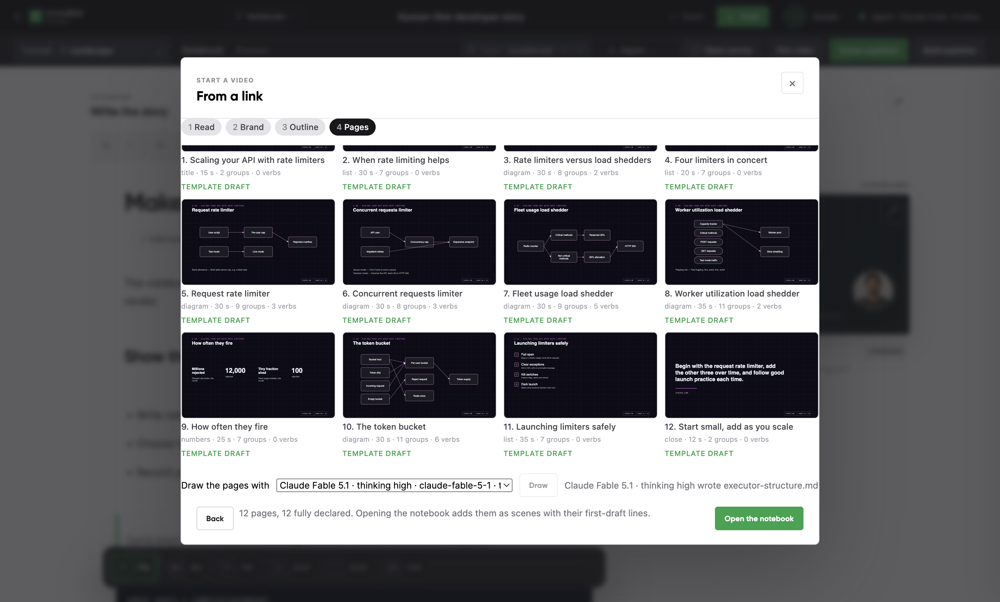
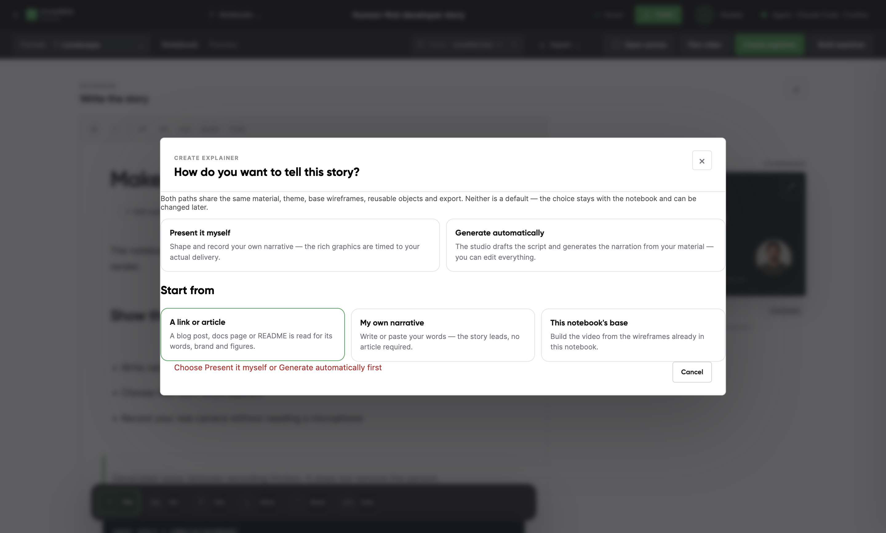
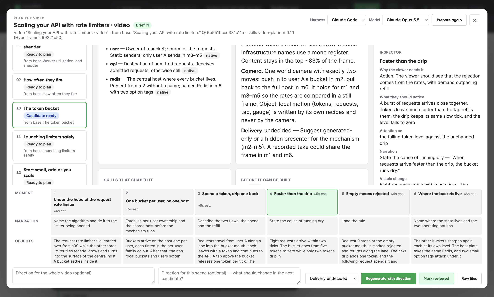
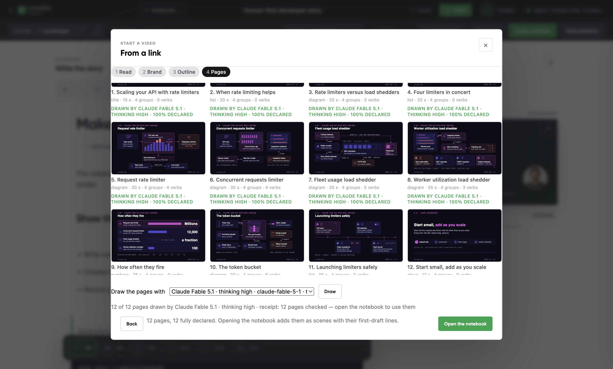
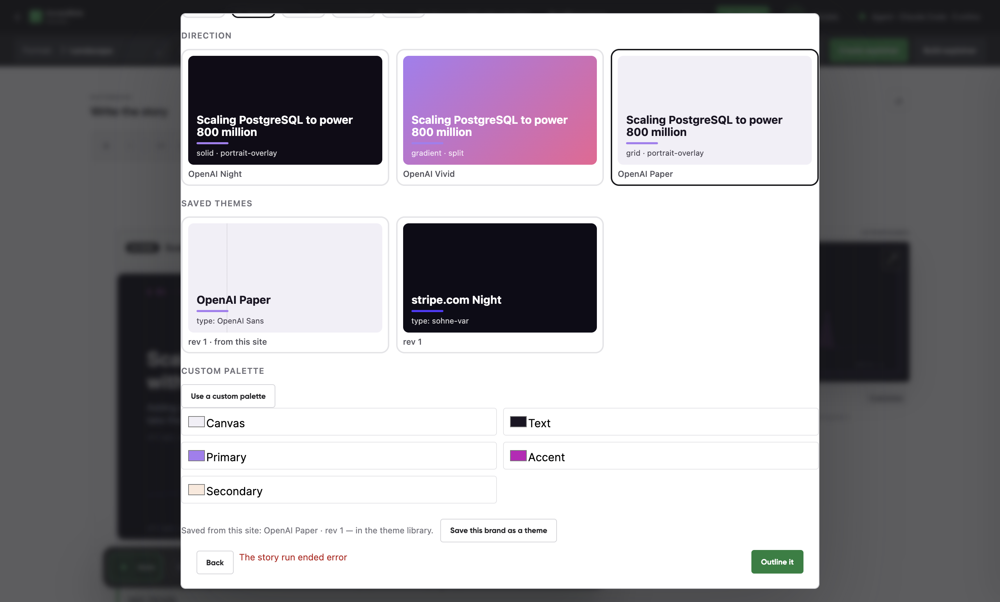
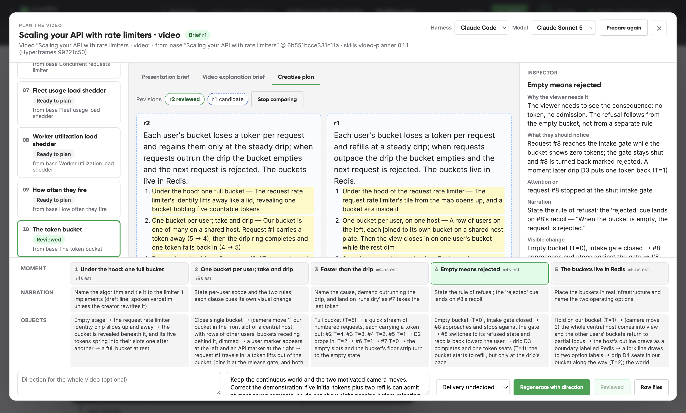
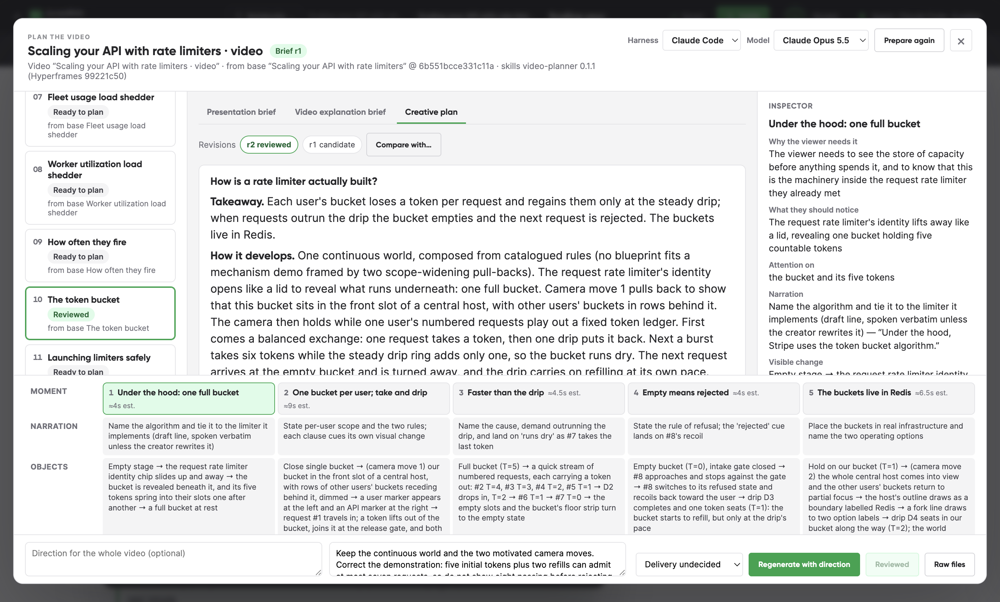
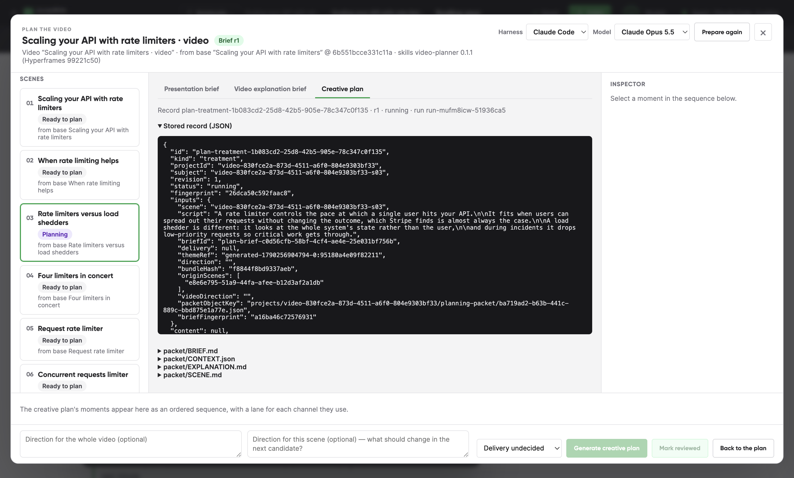
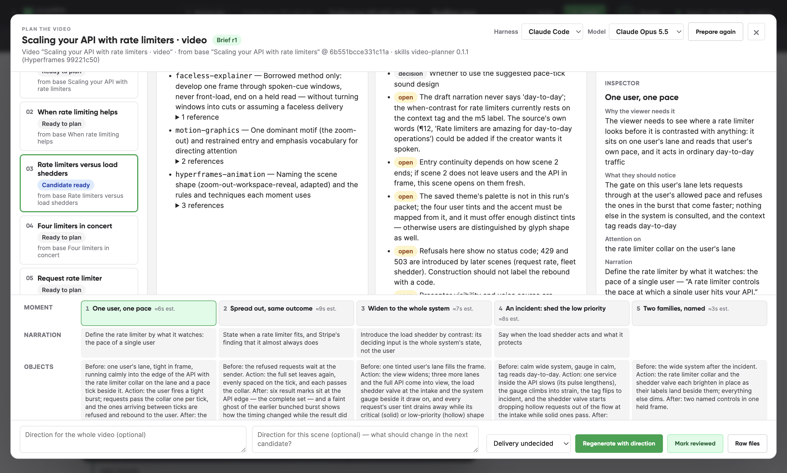

Annotated evidence — independent review, 24 September 2026
The screenshots below are unmodified captures of the running product. Borders and labels are review annotations layered in this document.
Template drafts bypass the design workflow

1 · Fixed template diagrams: no icon/artwork design pass
2 · Rich drawing is a separate, secondary action
3 · Primary action can import drafts before drawing finishes
Per-scene delivery is blocked by a global prerequisite

1 · Mandatory choice before the source or scenes exist
2 · Attempting the article path is rejected
Illustrative arithmetic is inconsistent
The plan has five starting tokens and two refills, but only rejects request nine. Seven admissions are possible. Candidate status indicates schema acceptance, not semantic correctness.

1 · 5 starting + 2 refill
2 · Request 9 rejected
3 · Accepted as candidate
The completed drawing pass restores diagram variety
This is the same source after the local harness's page-master pass, not artwork made by the reviewing assistant. Twelve pages were checked and imported after 26m33s.

1 · Capacity slots
2 · Bucket diagram
3 · All 12 rich pages ready
The provider error loses its recovery information
The running Claude CLI reported exhausted usage credits. The final status below replaces it with a generic error. See openai-provider-error.json for the public provider text and run ID.

1 · Actual quota cause is absent
2 · Retry offered without recovery guidance
Model preference resets; reviewed plan survives
No run was started with Sonnet. It was selected only to test persistence. The next app launch returned to Opus 5.5 while the reviewed r2 and direction remained intact.

Before restart: Sonnet 5 selected
r2 reviewed

After restart: Opus 5.5 reset
r2 still reviewed
Polling replaces the document being read
After expanding packet/SCENE.md during an active run, the next status poll closed it and reopened Stored record. This capture shows the reset state; the before/after interaction was also observed through accessibility inspection.

1 · Stored record reopens itself
2 · Selected packet collapses
A neighboring scene is assumed to have an unplanned final image
Scene 9 is Ready to plan. Bucket r1 nevertheless carries four limiter tiles over from that scene. Revision 2 changed this to a self-contained opening and an explicit unresolved continuity agreement.
1 · Neighbor has no plan
2 · Its outgoing visual is assumed
The planner identifies missing theme data
The real generated treatment explicitly reports the saved palette is absent. Packet inspection confirms the theme ID is present but its tokens and page artwork are not materialized.

Missing palette left unresolved
Backend evidence: captured probe output
This is a verbatim test transcript, not a product screenshot. These tests assert the observed defects; passing them reproduces a bug and does not mean it is repaired.
yarn workspace v1.22.10
yarn run v1.22.10
$ vitest run --passWithNoTests server/planning-independent-pg-review.test.ts
RUN v3.2.7 /Users/think/Documents/code/dev-video-creator-main/.claude/worktrees/m0-integration/apps/studio-v2
stdout | server/planning-independent-pg-review.test.ts > independent review reproductions > reproduces duplicate active records for concurrent identical requests
REVIEW concurrent queue: {"requests":4,"distinct":4,"revisions":[1,2,3,4]}
stdout | server/planning-independent-pg-review.test.ts > independent review reproductions > reproduces an active record being claimed by a second run
REVIEW run ownership: {"first":"review-owner-a","stored":"review-owner-b"}
stdout | server/planning-independent-pg-review.test.ts > independent review reproductions > reproduces a current and reviewable plan after its source changes
REVIEW stale ancestry: {"briefStale":true,"sceneState":"candidate","reviewStatus":"reviewed"}
stdout | server/planning-independent-pg-review.test.ts > independent review reproductions > reproduces the fragment-only source path rejecting retained page evidence
REVIEW retained fragments: {"passageInPacket":true,"accepted":false,"problems":["evidence ev-consume is not a passage of the retained source — quote it exactly (an ellipsis may join fragments)","evidence ev-burst is not a passage of the retained source — quote it exactly (an ellipsis may join fragments)"]}
✓ server/planning-independent-pg-review.test.ts (5 tests) 965ms
Test Files 1 passed (1)
Tests 5 passed (5)
Start at 19:10:38
Duration 1.41s (transform 181ms, setup 0ms, collect 219ms, tests 965ms, environment 0ms, prepare 64ms)
Done in 2.11s.
Done in 2.28s.